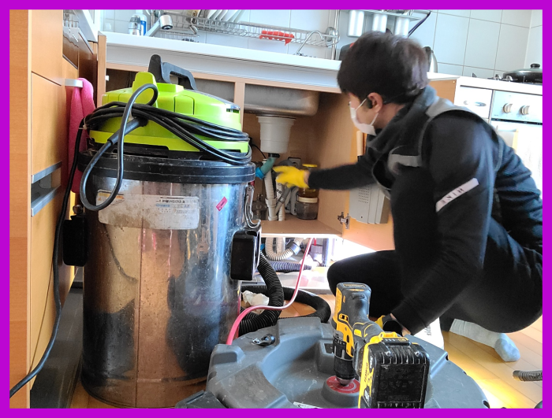
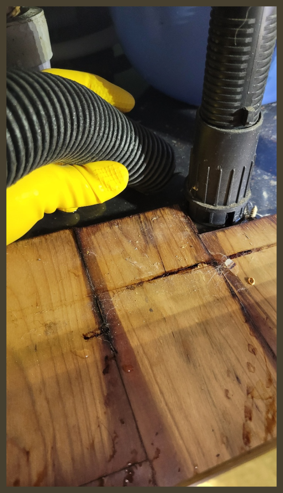
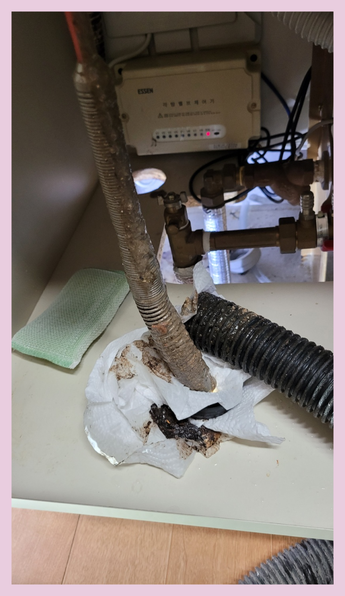
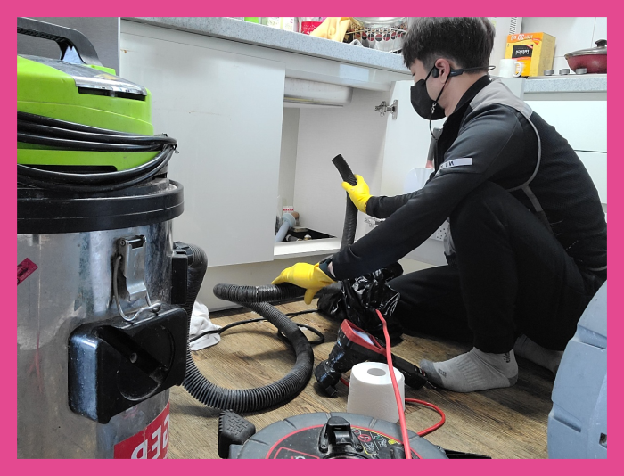
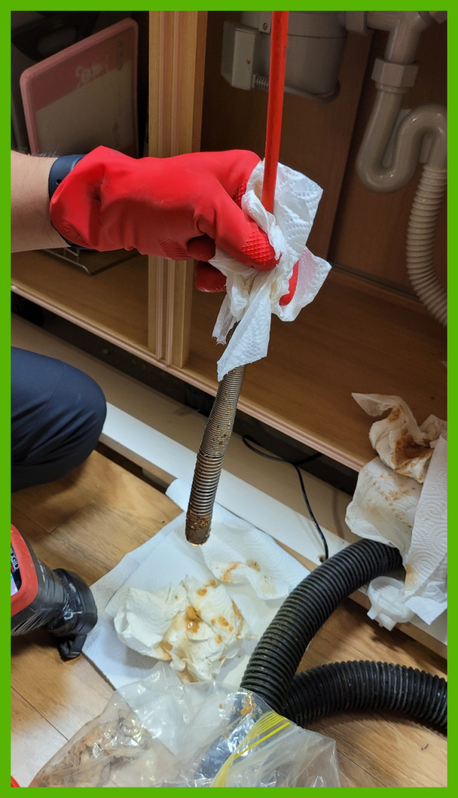
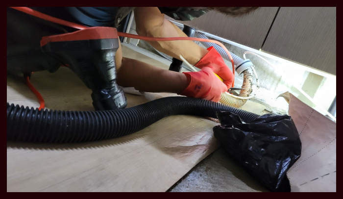

🏠 새솔동 싱크대배수관막힘 해양동 하수관수리 배관전문설비
서울 새솔동 싱크대막힘 전문 시공 후기

📋 작업 개요
- 위치: 서울 새솔동, 새솔동, 서울
- 서비스 유형: 싱크대막힘, 변기막힘, 하수구막힘, 배관막힘, 역류해결, 뚫는업체, 배관청소
- 작업 일시: 2023. 12. 11. 23:45
- 업체명: 하수구수사대 (010-5615-2118)
🔍 문제 상황
안녕하십니까^^
설비전문업체 "하수구수사대"를 찾아주셔서 감사드립니다.
우리나라는 사계절 변화가 뚜렷한 만큼 계절의 영향을 많이 받는배수 같은 설비에 문제가 발생할 확률이 높습니다.
배출관금방 해결되는 가벼운 경우도 있지만 문제 파악이 확실히 안되는 일은알아서 시도하기보단 믿을 만한 업체에 곧장 의뢰하시는 편이 좋습니다.
🔎 원인 분석
💡 전문가 진단: 새솔동 싱크대배수관막힘 해양동 하수관수리 배관전문설비
새솔동 싱크대배수관막힘 해양동 하수관수리 배관전문설비
퇴수 구조를 확실히 이해하고 있어야만 작업 진행을 하기 전에 어떤식으로 작업을 할지 막히게 되었을지 간단하게 예상을 할 수도 있고 진행을 할때 이런 전문지식이 있어야 작업시간 단축에 큰 도움이 됩니다.
심각하게 막힌 현장은 기본장비로는 소용이 없어서 다른 방법을 진행해야 하는데 이럴때 주로 사용하는 것이 샤프트장비입니다. 배수관 장비는 이물질을 단순히 뚫어내기보단 이물질을 분쇄하는 방식으로 최근에 많이 사용하고 있는 방식입니다.
업체 선정 시에도 그러한 상황 때문에 서둘러서 내방할 수 있는 곳을 찾게 되실 텐데 저희는 서울 경기 인천 어디든 바로 출동할 수 있는 배수구팀이 존재하기 때문에 한 시간 안으로 도착하여 작업을 해드립니다.
예전에는 아무래도 전문장비가 없으면 배수구 막힘을 발생하면 배수관을 다 틀어내서 큰 송사를 해야 하는 경우가 많았는데요. 그렇기에 많은 고객님들이 번거롭고 부담스럽다는 생각을 하실수 있었던 곳입니다. 하지만 이제는 배수구전문장비를 활용해서 신속하게 문제를 해결할수 있어서 많이 좋았습니다.

🔧 작업 과정
배출관배관 속에 있던 이물질들을 전체적으로 제거해 주고 석션기를 사용해서 추가 작업으로 시원하게 흡입했더니 상당하게 많은 양의 이물질이 분쇄되어 올라온 것을 확인할 수 있었습니다.
고객님께서는 사흘 전부터 하수관물이 잘 안 빠지면서 이상 징후가 있었다고 하셨는데요. 며칠 전부터 화장실에서 하수구 냄새가 올라오더니 갑자기 역류를 하면서 배수가 전혀 이뤄지지 않게 되었다고 하였습니다.
이번 현장은 오염 상태가 굉장히 심각했으며 전체적으로 고착된 배수구배관 슬러지가 굉장히 많았습니다. 일시적인 약품 사용이나 가벼운 석션으로는 처리가 안되는 상황이었기 때문에 전동 스프링기 장비를 이용하기로 했죠. 스프링 장비는 회수 오거가 회전하면서 작동하는 장비입니다.
베테랑의 해결책과 전에알려드린 물건들과 무엇이틀린지 한번상상을 해보시기바래요.하수 안을 육안으로확인가능하기에 기본적인것부터 다른것을 볼수있습니다. 느낌으로만 부어버려서 없애는것에 의심하게됩니다.
상황이악화된게 아니라면은 기본비용만 들고있지만 증상이너무 악화되었거나 기초장비로도 해결이안된다면 배출관첨단장비를더 사용해야되기에 견적비용이비싸 질수있습니다
경력자들로 모여있어서 다른곳보다 순식간에출장갑니다.몇시든지 아무때나문의 하시면된답니다.늦어질수록 불안해지시는게 의뢰자분들이여서 불안한느낌을 뚫어버리기위해서 순식간에출동한다음 배수구 고장난데를 수리하고있습니다.
하수도막힘으로 인한 불편은 대부분 비슷하지만 정작 불편을 초래한 원인에는 차이가 있기 때문에 이를 제거하고 수습하는 방법도 상이합니다.


✅ 작업 완료
그러니 지금 막혀서 당황스럽다고 한다면 걱정하지 마시고 저희를 불러주시면 지금 이곳처럼 바로 원인을 찾아서 배출관 뚫어드리도록 하겠습니다.
#하수구막힘 #하수구뚫음 #하수구역류 #씽크대막힘 #싱크대역류 #오수관막힘 #하수구청소 #욕실하수구막힘 #변기막힘 #하수구뚫는비용 #싱크대수리 #화장실막힘




⚠️ 주방 싱크대 배관 막힘 예방 수칙
- ✅ 기름기가 묻은 식기나 프라이팬은 설거지 전 키친타올로 반드시 기름때를 닦아내세요.
- ✅ 주기적으로 싱크대 개수대에 뜨거운 물을 가득 받아 한 번에 내려 배관 내부 기름을 씻어내세요.
- ✅ 배수구 거름망을 미세한 필터로 사용하시고 음식물 찌꺼기가 틈으로 새어 들지 않게 관리하세요.
- ✅ 베이킹소다와 식초를 뜨거운 물과 함께 일주일에 한 번씩 부어주면 배관 살균과 막힘 예방에 좋습니다.
💡 핵심 정리
- 확실한 장비 작업(내시경 점검 및 샤프트 스케일링)으로 원인을 뿌리 뽑습니다.
- 작업 후 1년 이내에 동일한 부위 재발 시 100% 무상 A/S 서비스를 보장합니다.
- 서울 · 경기 · 인천 전 지역에 24시간 언제든 긴급 출동할 수 있도록 항시 대기 중입니다.
❓ 자주 묻는 질문 (FAQ)
🚨 서울 새솔동 싱크대막힘 문제로 고민이신가요?
정확한 원인 진단과 확실한 시공으로 재발 없는 해결을 약속드립니다.
24시간 긴급 출동 | 서울 · 경기 · 인천 전지역 | 1년 내 재발 시 무상 A/S